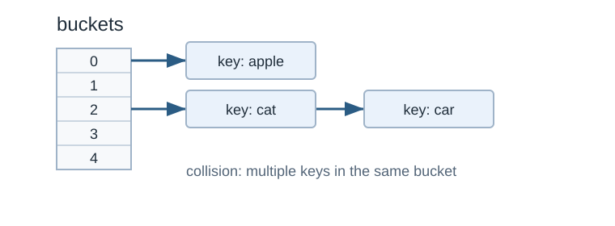

Hash Table
Idea
hash table เป็น data structure ที่เอาไว้สร้าง dictionary abstract data structure
hash function

Hash table with chaining. Original diagram for this guide.
หัวใจหลักของการทำ hashing คือการกระจาย entries (key/value pairs) ไปไว้ในช่องต่างๆใน array ที่เรากำหนด
เมื่อเรามี key แล้วกระบวนการนี้ควรจะคิด index ที่ key นี้ควรจะอาศัยอยู่
index = f(key, array_size)ตามปกติแล้วกระบวนการนี้จะมีสองขั้นตอน คือ
hash = hashfunc(key) // คิดค่า hash จาก hash function ของ key
index = hash % array_size // mod ค่า hash ด้วย array_size เพื่อป้องกัน index errorในกรณีนี้ การ hash จะไม่สนใจขนาดของ array แล้วค่อยจำกัดขอบเขตภายหลังด้วยการ modulo (%) ให้ index อยู่ในช่วง [0, array_size − 1]
Polynomial hashing
ตัวอย่าง hash function หนึ่งคือ polynomial hashing ซึ่งมีลักษณะดังนี้
(s[0]A{n − 1} + s[1]A{n − 2} + ⋯ + s[n − 1]A0)mod B
โดย s[0], s[1], ⋯, s[n − 1] คือค่าของแต่ละตัวอักษรของ s
และ A, B เป็นค่าคงที่ที่เรากำหนด
ตัวอย่าง
คำว่า ALLEY จะมีค่าดังตาราง
A |
L |
L |
E |
Y |
|---|---|---|---|---|
65 |
76 |
76 |
69 |
89 |
หากกำหนดให้ A = 3 และ B = 97 จะทำให้ hash value มีค่าคือ
(65 × 34 + 76 × 33 + 76 × 32 + 69 × 31 + 89 × 30)mod 97 = 52
เราก็สามารถกำหนดได้ว่าคำว่า ALLEY ควรจะอยู่ช่องที่ 52
ตัวอย่างโปรแกรม
#include <bits/stdc++.h>
using namespace std;
const int A = 3;
const int B = 97;
string hash_table[B];
int hash_function(string s) {
int sm = 0;
for (auto x : s) {
sm *= A;
sm += int(x);
sm %= B;
}
return sm;
}
int main() {
string s = "ALLEY";
printf("Hash value of %s is %d\n", s.c_str(), hash_function(s));
hash_table[hash_function(s)] = s;
}ได้ output แบบนี้
Hash value of ALLEY is 52💡 ข้อสังเกต
hash function ควรจะเป็น deterministic function ซึ่งหมายความว่าถึงเราจะรันกี่ครั้งก็ควรจะได้ค่าเดิมเสมอ
ไม่อย่างนั้นเราจะไม่สามารถรู้ได้ว่าคำๆหนึ่งควรจะอยู่ที่ช่องอะไร หากรันสองครั้งแล้วค่าไม่เหมือนกัน
ตัวอย่างของ nondeterministic function คือการ random ค่าขึ้นมา ทำให้ไม่มีการการันตีว่ารันสองครั้งแล้วจะได้ค่าเดิม
Collision
เนื่องจากเวลาทำ hashing จะไม่สามารถการันตีได้ว่าค่า hash ของสองคำที่แตกต่างกันจะแตกต่างกันเสมอ
เช่นหาก hash value ของ “John Smith” กับ “Sandra Dee” เป็นค่าเดียวกันที่ค่า 152 จะเกิดปัญหาว่าไม่สามารถเก็บทั้งสองค่าในช่องเดียวกันได้
มีวิธีการแก้ปัญหาหลายแบบ ข้อดีข้อเสียแตกต่างกัน
Separate Chaining
Visual reference: separate chaining illustration from Wikipedia 1
ทำให้แต่ละช่องเป็น linked list
Open addressing
Visual reference: open addressing illustration from Wikipedia 2
ขยับไปช่องถัดไป
เปรียบเทียบ
พิจารณาถึงตอนที่เราต้องการตรวจสอบว่ามีข้อมูลดังกล่าวอยู่ในตารางหรือไม่
พิจารณากรณีที่มีการลบข้อมูลเกิดขึ้น
โจทย์ฝึกฝน (Practice Problems)
ลองทำโจทย์เหล่านี้จาก CSES Problem Set เพื่อฝึกใช้ทักษะจากบทนี้ โดยเริ่มจากโจทย์ที่ง่ายที่สุดก่อน
โจทย์เพิ่มเติม: CSES Problem Set และ programming.in.th
{kind=link}
{kind=link}